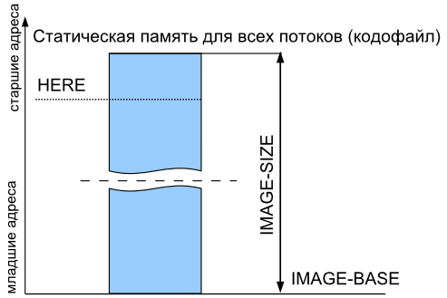
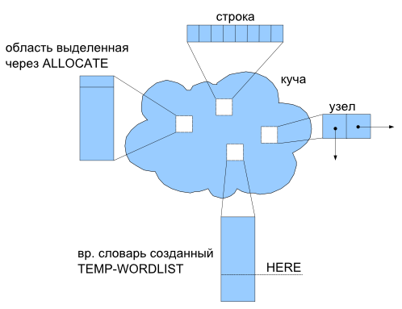
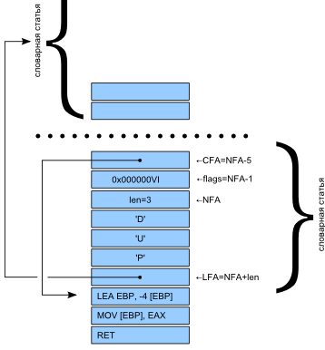

|
Устройство SPF
Устройство SPF
Детали реализации ядра
Последнее обновление: $Date: 2008/08/26 19:07:51 $
[Русский]
Содержание
- EAX - вершина стека данных
- EBP - указатель на стек данных (т.е. [EBP] - второй элемент стека данных)
- ESP - указатель на стек возвратов
- EDI - указатель на данные потока (указывает на начало USER-области текущего потока)
Стек возвратов совмещен с аппаратным стеком (ESP).
Стек параметров адресуется регистром EBP, вершина стека хранится в EAX
Указатели стеков: SP@ RP@ SP! RP!
Дно стеков: S0 R0
Оба стека начиная от своего дна, растут вниз (в сторону уменьшения адресов).
( src/compiler/spf_translate.f )
Контекст (ORDER, CURRENT) у каждого потока свой
(по умолчанию: ONLY FORTH DEFINITIONS ).
Поддерживается параллельная интерпретация.
Компиляция в одно хранилище должна осуществляться только одним потоком (во избежание).
Код и данные хранятся в едином хранилище (сегменте, кодофайле).
Слова доступа к нему стандартные : HERE ALLOT , C,
Слово UNUSED вынесено в lib/include/core-ext.f

IMAGE-BASE - начало хранилища.
IMAGE-SIZE - резервируемый размер.
Временные словари ( TEMP-WORDLIST FREE-WORDLIST ).
Такой словарь ассоциирован с собственным хранилищем
(память для которого распределяется динамически).
Когда такой словарь (список) является текущим (CURRENT)
(словарем компиляции, целевым, в который добавляются слова)
HERE дает начало свободной области его хранилища.

Windows: У каждого потока свой хип. ALLOCATE выделяет память из хипа потока, в контексте
которого вызвано. При завершении потока его хип уничтожается (вся память выделенная
из этого хипа -- освобождается).
Linux: Отдельных хипов нет. FIXME Надо ли синхронизировать ALLOCATE?
Хип процесса ядром форт-системы не используется.
(хотя в принципе, его можно использовать, и некоторые расширения делают это).
Windows: При доступе к разделяемому хипу из разных потоков стоит вспомнить о необходимости синхронизации.
Кроме отдельной кучи каждый поток имеет свой собственный блок статических данных
-- USER-область (размером EXTRA-MEM, по-умолчанию 8кб). Переменные и массивы
резервируются там словами словами USER , USER-VALUE .
Словарь является односвязным списком с полем имени (его адрес обозначаемый как NFA
используется для идентификации конкретной словарной статьи в словаре), полем кода
в котором хранится xt действия данного слова, полем флагов (содержит признаки
характеризующие это слово -- &IMMEDIATE и &VOC )

Т. н. "поля параметров" нет, так как "телом" определений в SPF являются последовательности
машинных инструкций.
FIXME описание VOC-NAME! PAR! CLASS!
( src/compiler/spf_wordlist.f )
FIXME перенести в intro
В файле src/spf_compileoptions.f описаны параметры компиляции по умолчанию которые можно
переопределить в src/compile.ini.
Windows: Компиляция ядра выполняется запуском bat-файла src/compile.bat. По умолчанию,
сборку выполняет одна их младших версий SPF (jpf375c.exe в корневой папке), но
SPF может и сам собирать себя.
Пререквизиты для сборки :
- исходники (
src и lib)
- целевой компилятор (например jpf375c.exe)
Linux: Для перекомпиляции ядра можно использовать src/compile или src/Makefile. Во время
сборки компилируется и выполняется программа на Си (config.gen) которая генерирует src/posix/config.auto.f с
определениями системно-зависимых констант. Целевой компилятор создаёт объектный файл, который потом
линкуется с системными библиотеками (libdl, libc, libpthread). В src/compile.ini необходимо вписать :
TRUE TO TARGET-POSIX \ сборка для Linux
TRUE TO UNIX-ENVIRONMENT \ юниксовый EOLN
Пререквизиты для сборки :
- исходники (
src и lib)
- целевой компилятор (
spf4orig (ранее собранный бинарник) либо jpf375c.exe под wine)
- gcc (файлы include'ов, препроцессор, компилятор, линкер) FIXME точнее (имена пакетов)
- src/compile.ini
Оптимизация основанная на шаблонах машинного кода
Именно эти шаблоны и реакции на них составляют подавляющую часть 100 с лишним килобайт оптимизатора
(файл src/macroopt.f ). Такая оптимизация на шаблонах в SPF4 заключается в том, что происходит
подмена скомпилированного кода командой OPT-RULES. OPT-RULES содержит набор правил оптимизации,
представленных в виде программы. Каждое правило состоит из 2-х частей: идентификации кода и процедуры
подмены. Доступ к коду осуществляется посредством массива ссылок на последние операторы OP0.
Использование OP0 позволяет отделить коды команд от их операндов.
Правило замены фрагмента кода:
NEG EAX \ F7 D8
ADD EAX , 0 [EBP] \ 03 45 00
NEG EAX \ F7 D8
на:
SUB EAX , 0 [EBP] \ 2B 45 00
Представляет собой:
OP2 @ @ 4503D8F7 XOR \ NEG EAX ADD EAX, X [EBP]
OP0 @ W@ D8F7 XOR OR 0= \ NEG EAX
IF M\ 20 DTST
OP1 @ @ 452B OR OP2 @ ! \ SUB EAX, X [EBP]
OP2 ToOP0
-4 ALLOT
FALSE M\ 21 DTST
EXIT
THEN
Подключение
Во время компиляции ядра макрооптимизатор подключается два раза :
- в инструментальную систему, используется в процессе сборки для оптимизации кода целевой
(создаваемой) системы, подключается в
src/tc_spf.F (USE-OPTIMIZER)
- в целевую систему, для того чтобы новая система во время исполнения генерировала оптимизированный
код, подключается в
src/spf.f (BUILD-OPTIMIZER)
Переменные из macroopt.f которые используются в ядре.
OPT? -- состояние оптимизатора: включён/выключен.
MM_SIZE -- максимальный размер слова (в байтах) который позволено "разворачивать"
("инлайнить") оптимизатору.
:-SET -- устанавливает границу для оптимизатора, все команды находящиеся по адресам младшим
значения :-SET, оптимизатор не трогает.
LAST-HERE устанавливает адрес конца последней скомпилированной маш. инструкции. LAST-HERE
приравнивается в ядре HERE только по окончании каждой транзакции компиляции.
OP0, OP1, ... OP8 -- адреса 9-и последних скомпилированных машинных команд (OP0
-- адрес начала самой последнего скомпилированной машинной инструкции, OP1 -- адрес начала предпоследней
инструкции, и т.д.).
JP0, JP1, ... JP4 -- адреса пяти последних скомпилированных машинных команд -- ветвлений
(как условных так и безусловных).
Пользовательское пространство начинается под Windows
с 0x500000, а под Линукс - гораздо дальше, в запрещенных для
вин-программы адресах. Из-за этого приходится пересчитывать адреса при кросс-компиляции на Windows
объектного ELF файла для Linux. Если делать SPF/Linux под Линукс, то >VIRT не нужен.
|